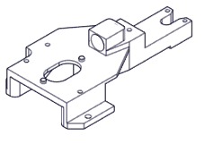
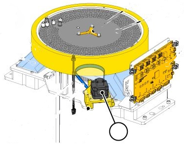

Troubleshooting Sample Storage Wheel Belt Alignment
This topic includes information about how to troubleshoot the sample storage wheel belt alignment.
Safety Reminder
Servicing the DxI 9000 instrument involves potential risks for pinch and puncture, electrical shock, and exposure to hazardous materials. You must mitigate these risks by taking appropriate countermeasures. See
Safety for more information.
Because the sample pick-and-place (PnP) moves reaction vessels (RVs) to and from the sample wheel, alignment and movement must be consistent. A spring-loaded tensioner assembly provides tensioning and placement for the sample wheel drive belt.
Figure 411: Drive Belt Tensioner

The motor and encoder assembly is mounted onto the tensioner assembly. The attached spring engages the motor assembly to increase the tension of the drive belt to the proper intensity.
Figure 412: Sample Storage Wheel Module

When to Perform
Perform this procedure when there is increasing sample pick-and-place (PnP) Z-motor slippage with no Z-motor and encoder issues presented.
Inspecting the Drive Belt and Motor
Turn off the instrument to prevent injury or damage to the instrument. See
Turning Off the Instrument for more information.
Inspect the sample storage wheel home sensor to be sure it is not hitting or rubbing against the drive pulley flag.
If the drive pulley flag is rubbing against the home sensor, inspect the C-clip on the drive shaft for damage. Replace the C-clip if it has damage. See
Replacing the Sample Wheel Motor and Encoder for more information.